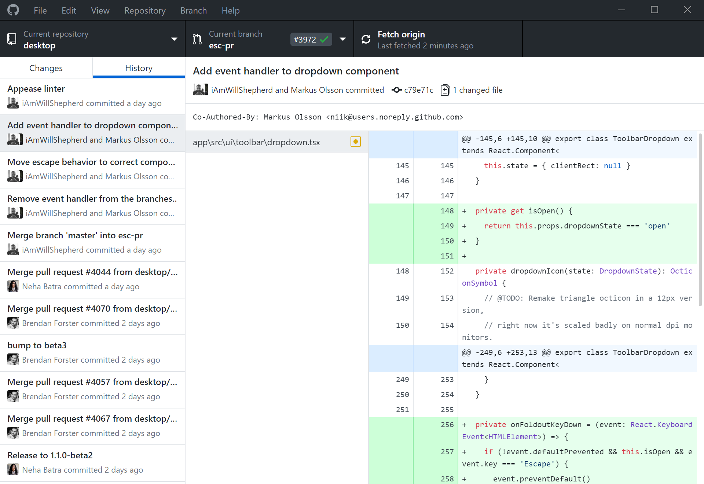

Características más importantes
de Git son:
- Rapidez en la gestión de ramas
- Gestión distribuida
- Gestión eficiente de proyectos grandes.
- Realmacenamiento periódico en paquetes.
Diferencias entre GIT y Github
GIT se podría decir que es el protocolo de gestión de versiones, mientras que Github es una aplicación que utiliza este protocolo para gestionar esas versiones en Github. Github no es el único servicio que utiliza GIT, también existen otros como GitLab

¿Qué es un repositorio?
- Significado y funciones
- Actualizar repositorios
¿Qué es un commit?
- Registro de cambios
- push
- ¿Son comentarios?

Extra Github

Realiza commits con colaboradores al instante
Los commits te permiten editar y actualizar tu código de una manera fácil y sencilla

Comprueba los branches con pull y observa su estado
Puedes comprobar todos los pulls abiertos para tu repositorio y comoprobar si es un branch local, hasta si está subido a la red o si es un simple fork. También puedes ver si han sido aprobados algunos commits.

Elementos remarcados
The new GitHub Desktop supports syntax highlighting when viewing diffs for a variety of different languages. Tanto desde la web como desde la aplicación se puede ver los elementos remarcados que han sido modificados. Saldrán en verde y con un "+" si han sido agregados. Saldrán en rojo y con un "-" si han sido quitados.

Conclusión
¿Es realmente útil?
© Untitled. Design: HTML5 UP.